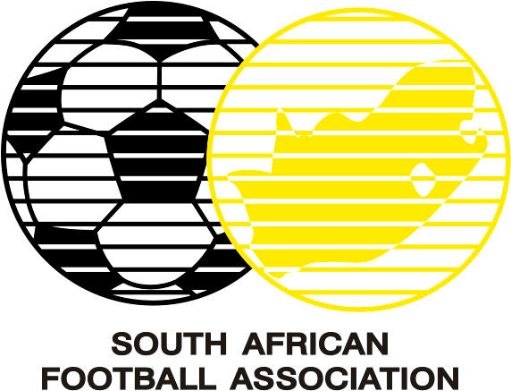

por Pedro Henrique B. N. Prado

A organização da Copa do Mundo promete resolver a falta de transportes públicos, de hospedagem e a alta violência urbana para 2010. Os dez estádios estão praticamente prontos. Tudo quase perfeito, se não faltasse o essencial para o povo sul-africano: um bom time para torcer. Diante de todos os problemas da África do Sul para o Mundial, um dos que ainda parecem insolúveis é a longa crise de relacionamento dos Bafana Bafana com o gol. Nos últimos sete jogos, o time marcou apenas uma vez, contra a frágil equipe de Madagascar, ainda sob o comando de Joel Santana.
Já com Carlos Alberto Parreira, foram dois 0 a 0 contra Japão e Jamaica, o que prova que o problema da África do Sul não é treinador. Aliás, logo em sua primeira entrevista coletiva Parreira fez questão de lembrar que hoje a África do Sul tem apenas um jogador atuando regularmente em uma liga importante da Europa - Steven Pienaar, do Everton, na Inglaterra.
Piennar é um bom meia, mas não é craque, muito menos mágico. Em um time com qualidade, pode funcionar muito bem, mas na África do Sul de hoje acaba perdido diante das deficiências técnicas de seus companheiros. Para tentar resolver lá na frente, Parreira trouxe de volta o atacante Benni McCarthy, maior artilheiro da história da seleção, que estava afastado por indisciplina e que ainda está longe da forma ideal. Outro bom nome do time é Teko Modise, meia veloz, driblador, habilidoso, mas que sofre do mesmo bloqueio de seus companheiros quando está de frente para o gol.
Parreira ao menos terá bastante tempo de trabalho no ano que vem. Vai ao Brasil, à Alemanha, terá um calendário privilegiado. E ele vai mesmo precisar, porque sabe do longo caminho que tem para transformar os Bafana Bafana em uma equipe realmente competitiva. Para não se tornar o primeiro anfitrião de Copa do Mundo na história a não passar da primeira fase, a África do Sul tem que melhorar muito. Precisa, também, torcer para que as bolinhas que decidem os grupos do Mundial lhes sejam favoráveis. Se para as outras 31 seleções o sorteio já é importantíssimo, para a África do Sul ele parece essencial - pode determinar um fracasso retumbante ou a possibilidade de uma festa apoteótica no ano que vem.